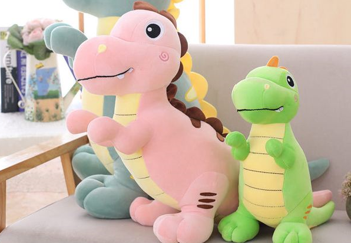
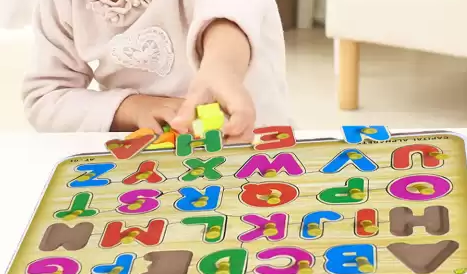
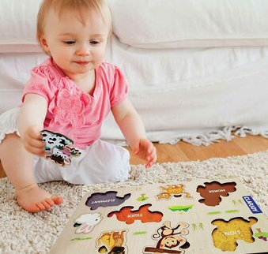

Stuffed Toys
Description: Soft and cuddly, stuffed toys are designed for comfort and companionship. Made from plush materials, they come in a variety of animal shapes and characters, perfect for snuggling and imaginative play.
Recommended Age: 0+ months (ensuring the toy is free of small parts for babies)

Teether Toy
Description: Teether toys are crafted from safe, non-toxic materials designed to soothe babies' gums during the teething phase. They often come in fun shapes, textures, and colors to engage the child while providing relief.
Recommended Age: 3+ months
Music Sound Toys
Description: Music sound toys introduce children to melodies, rhythms, and various sounds. From simple rattles to interactive keyboards and musical animals, these toys promote auditory skills and sensory development.
Recommended Age: 6+ months (for simpler toys like rattles); 12+ months (for more interactive musical instruments)
Art and Clay Toys
Description: Art and clay toys inspire creativity and fine motor skills. These include modeling clay sets, painting kits, and drawing boards that allow children to explore their artistic side while developing hand-eye coordination.
Recommended Age: 3+ years
Puzzle Toys
Description: Puzzle toys challenge children's problem-solving abilities and cognitive development. From simple shape sorters for toddlers to more complex jigsaw puzzles for older children, these toys foster critical thinking and patience.
Recommended Age: 2+ years (for simple puzzles); 4+ years (for more complex puzzles)


Activity Toys
Description: Activity jumper and walker toys help babies build leg strength and balance as they explore movement. Often featuring interactive buttons, lights, and sounds, these toys engage the child while promoting physical activity and motor skills.
Recommended Age: 6+ months for jumpers; 9+ months for walkers